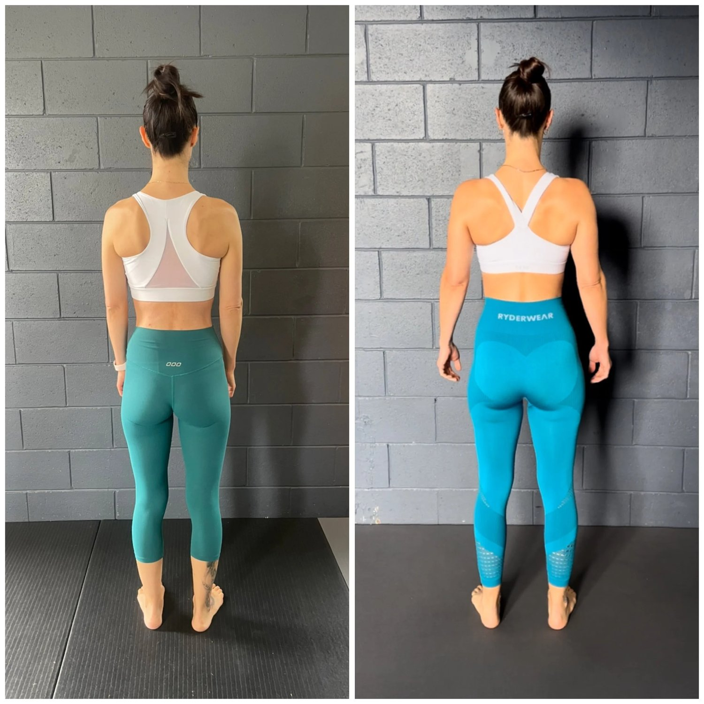
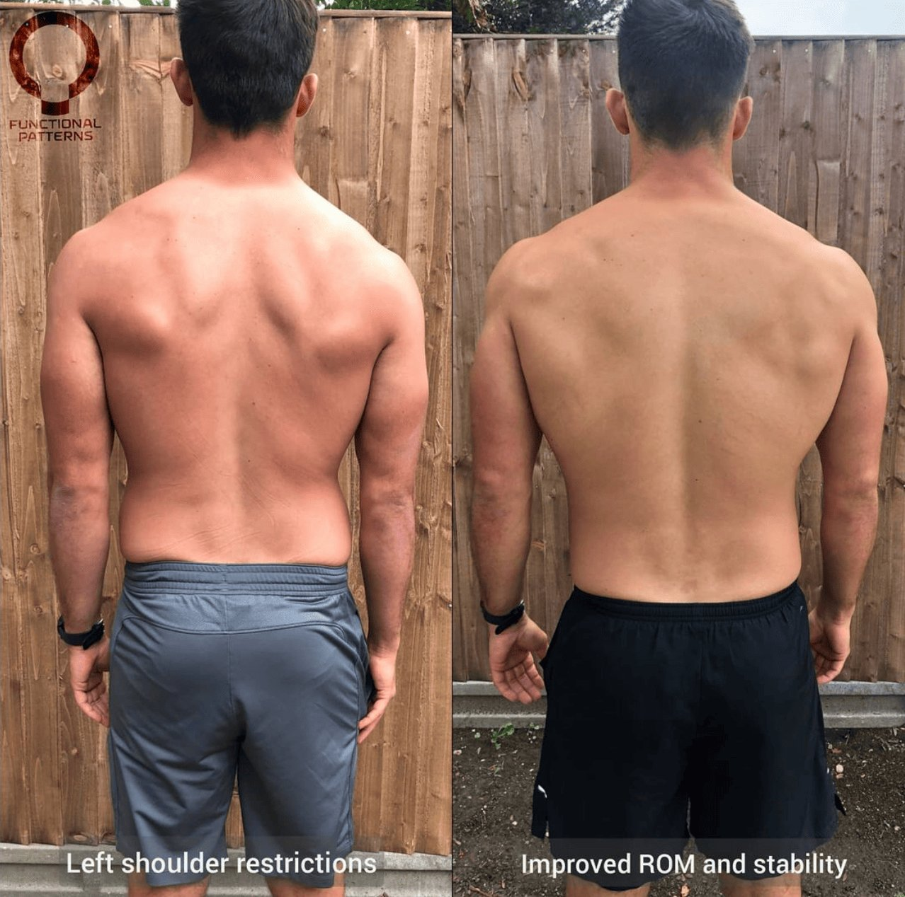

Back pain is one of the most common reasons people seek help. Whether it's sharp, dull, or nagging—pain in your back can interrupt sleep, work, exercise, and daily movement. But with so many options— back specialist, lower back doctor, spine surgeon, back pain clinic near me—who do you go to?
At Functional Patterns Brisbane, we take a different approach. We aren’t your typical back doctor or spine pain specialist. We don’t rely on short-term fixes or isolated treatments. We get to the root of your back pain using a proven, evidence-based system that rewires how your body moves.
Stop Chasing Symptoms. Fix the Cause.
Most people see a backache specialist, do some physical therapy, or get prescribed painkillers. These treatments often focus on relieving pain temporarily—but they don’t change the pattern that caused the pain.
Your spine doesn’t work in isolation. It responds to how you breathe, stand, walk, and move. That’s why our method is different.
At Functional Patterns Brisbane, we use biomechanics to treat back problems at their source. We don’t use massage, manipulation, or passive treatments. We use precise, movement-based strategies that restore function to your entire system.

What Makes Us Different from a Back Pain Specialist Doctor?
You might be asking: “Who to go see for back pain?” or “Where to go for bad back pain?”
Here’s what sets us apart:
-
We assess your entire structure—from head to toe—not just your lower back.
-
We look at your breathing, walking, posture, and movement patterns.
-
We train your nervous system to stabilize your lumbar spine under real-world conditions.
-
We avoid methods that create compensation or reliance (like belts, braces, or isolated exercises).
-
We don’t just focus on pain relief—we aim to restore function and improve your quality of life.
If you’ve tried back pain treatment near me and still haven’t found relief, it’s time to try something different.

Common Causes of Lower Back Pain
There are many types of back pain. Some common ones we help with include:
-
Degenerative disc disease
-
Herniated discs
-
Spinal stenosis
-
Nerve pain or compressed nerve root
-
Poor posture and movement habits
-
Compensation patterns from old injuries or surgeries
You may have been told your only option is spine surgery. Or maybe you’ve been stuck doing the same physical therapy for years with no real change.
We help people like you daily at our Brisbane back pain clinic. We take your pain seriously—but we don’t settle for short-term fixes. Instead, we build you a long-term treatment plan based on how your body works best—through natural, efficient, human movement.

What Our Lower Back Pain Treatment Looks Like
This is not a quick massage or adjustment. We use Functional Patterns protocols to:
-
Correct posture and alignment
-
Reprogram dysfunctional breathing mechanics
-
Improve gait (how you walk)
-
Build core and spinal stability under dynamic conditions
-
Reduce pressure in the spinal canal through full-body integration
Our clients often say it’s the first time a lower back pain specialist has helped them understand why their pain keeps coming back.
Hear From an FP Brisbane Client:
“I’ve been training at Functional Patterns Brisbane for 2.5 years and have seen so many results and improvements in that time. Thanks for Keriann I’m essentially pain free which is something I never thought could happen after experiencing chronic back pain since childhood.”
- Client Pictured in Image

Why Functional Patterns Is Better Than Traditional Back Doctors
A doctor for back injury may offer surgery, injections, or pills. But that doesn’t solve the root cause. Even the best spine pain doctor may miss key patterns in how you move that create wear and tear.
Here’s the truth: Your body is a system. Your spine reflects how your whole body works. If you ignore that, you’ll always chase symptoms instead of solving them.
We believe in fixing dysfunction, not masking it.
Brisbane’s Answer to Long-Term Back Pain Relief
If you’re searching for:
-
Back pain specialist near me
-
Lower back specialist in Brisbane
-
Back problem specialist
-
Back pain treatment near me
-
Spine pain specialist who gets results
You’ve just found it.
At Functional Patterns Brisbane, we’re not interested in putting you on a lifetime treatment plan. Our goal is to get you moving well and pain-free—and then keep you there.
We specialize in helping people who have tried everything else. Whether your pain includes stiffness, nerve pain, or general lower back pain, we build a custom plan that targets the cause—not just the pain.

Who We Help
-
People with chronic back pain who feel stuck
-
Active people who want to avoid spine surgery
-
Desk workers suffering from postural imbalances
-
Athletes with recurrent back injuries
-
Anyone looking for an evidence-based, long-term solution
Book Your Initial Back Assessment Today
Don’t wait for your back pain to get worse. Don’t rely on short-term fixes or outdated rehab.
If you’re in Brisbane and want to work with a team who truly understands movement, posture, and the nervous system— we’re here to help.
Book your 90-minute movement assessment today. We’ll look at your posture, gait, breathing, and spinal function to build a personalized program for your long-term pain relief.
Ready to Move Beyond Pain?
Your spine is your foundation. Treat it with the respect and care it deserves.
If you’re tired of looking up back pain clinic near me or wondering who to go see for back pain, Functional Patterns Brisbane is your next step.
Say goodbye to short-term relief and hello to lasting change.